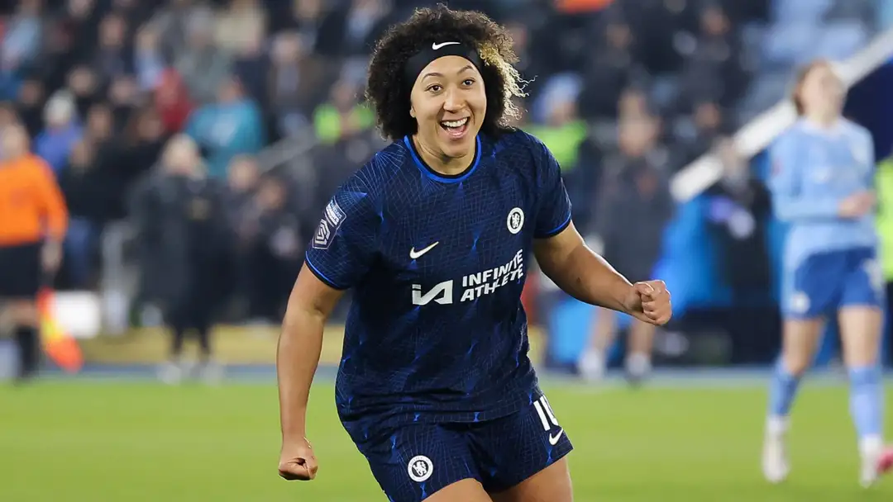

Chelsea get their revenge on Man City! Winners and losers as Lauren James stars but Mayra Ramirez injury is cause for concern as Blues best WSL rivals to reach Conti Cup final
The Blues fell to defeat to their Manchester rivals in the league last month but got their revenge on Thursday to reach yet another Conti Cup final
Chelsea will face Arsenal in the Continental Cup final after narrowly defeating Manchester City on Thursday night, courtesy of Lauren James' deflected strike. It will be a rematch of last year's final and give the Blues a shot at revenge, after they lost that encounter 3-1 at Selhurst Park.
It was City, the hosts, who had the first glimpses at goal when Khadija Shaw hit the sidenetting and then headed a Lauren Hemp cross wide a few moments later. However, James broke the deadlock with just eight minutes on the clock when Chelsea ruthlessly punished a misplaced pass, Erin Cuthbert finding Mayra Ramirez and the Colombian picking out James, whose effort took a deflection that left Khiara Keating with no chance.
Greenwood did well to block a Ramirez shot when Chelsea pounced on another mistake not long after but, from there, it was all City. There were a few moments for the home side before half time, when Yui Hasegawa hit the target from range and Chloe Kelly fired off target after a good run into the box, but it was the second half when they really threw the kitchen sink at Chelsea.
Shaw tested Hampton from an angle, though she probably should have squared for a team-mate. The England goalkeeper then made an outstanding save to deny Hemp from point blank range, shifting her weight remarkably to dive the other way and thwart her international team-mate.